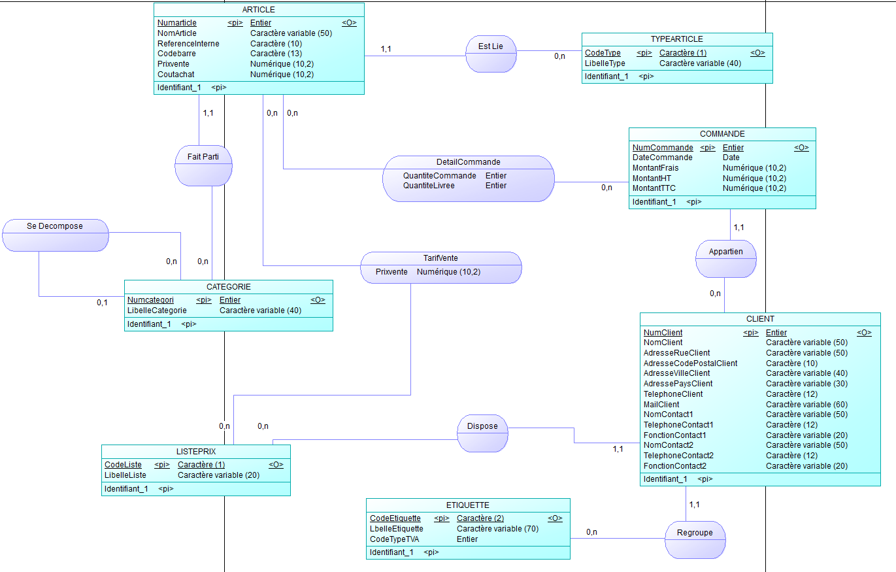
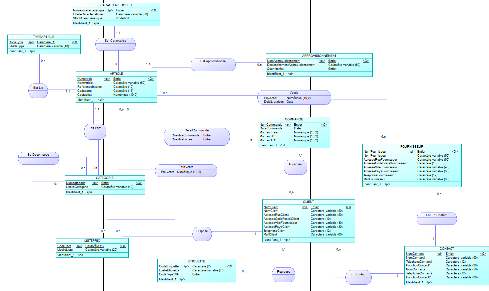
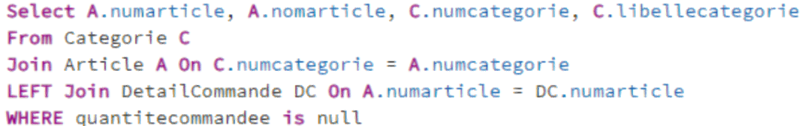
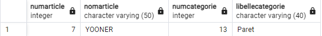

Durant ma 1ère année de BUT Informatique, j'ai eu l'opportunité de mettre en place mon apprentissage dans la conception d'une base de données de l'entreprise fictive : « Matski »

Base de données actuelle de Matski

Base de données future
Matski m'a fourni leur base de données actuelle, une base incomplète avec des erreurs. Après avoir expliqué au client ce qu'il n'allait pas dans leur base, j'en ai réalisé une autre en fonction de leur nouveau besoin.
La nouvelle base que j'ai réalisée règle les erreurs mais également ajoute une partie achat de l'entreprise. Elle ajoute les tables suivantes : Fournisseur, Contact, Approvisionnement et Caractéristique d'un article

Durant notre étude de la table, l’entreprise nous a informé qu’il voudrait connaître quelques informations sur la base de données pour faire une analyse des données économiques de l’entreprise. Ils nous ont donc posé plusieurs questions auxquelles j'ai répondu en faisant des requêtes sur leur base de données actuelle.
